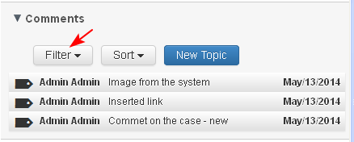
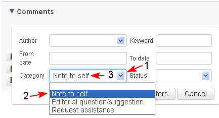
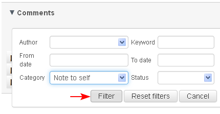
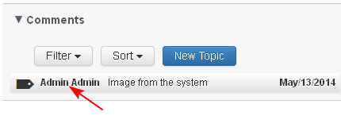
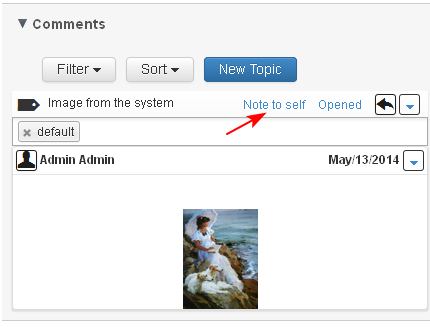

- Comment on an object could be filtered, when the user selects button 'Filter' in the 'Comments' section.

When 'Filter' is selected, a sub-section opens where the user could choose from the following criteria:
- Author - the user could choose only between the users who commented on the object
- Keyword - the user could type a free text to search through the comments
- From/ To Date - the user could enter "From date" and/ or "To date" when comment is created
- Status - the user would be able to filter comments with specific status
- Category - the user would be able to filter comments with specific category
The user selects the criteria (1-2-3). The user could filter comments by using one of the criteria, or by using combination of 2 or more criteria.

- The user clicks "Filter".

- The system displays the result. The user clicks on the link to open the comment.

- The system opens the comment with the selected criteria for review.
